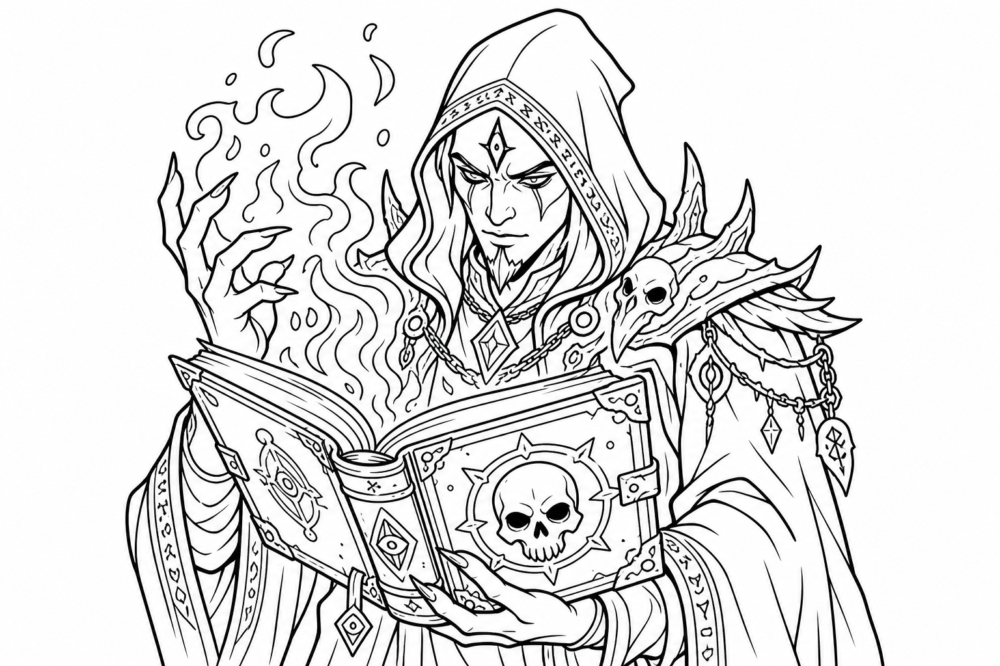

The Magical Deal-Maker!
Welcome, seeker of secrets! As a Warlock, you didn't study magic or get born with it. Instead, you made a deal (a "Pact") with a powerful, mysterious creature! Maybe it's a fairy queen, a spooky alien from the stars, or a fiery fiend. They gave you awesome magical powers in exchange for your loyalty!

This is the coolest, most famous spell in the game, and only Warlocks get it! It's a Cantrip, which means you can cast it all day long. It shoots a beam of crackling magical energy at your enemies, and as you level up, it shoots multiple beams at once!
Your magic works differently than other spellcasters. You only have a few Spell Slots, but they are ALWAYS cast at the highest possible level! Even better, you get all your Spell Slots back after just a Short Rest (like eating lunch), while Wizards have to sleep for 8 hours to get theirs back!
Your patron gives you special magical secrets called Invocations. These let you do amazing things, like seeing perfectly in magical darkness, reading any language in the world, or making your Eldritch Blast push monsters backward!
As you go on adventures and defeat monsters, you will gain Experience Points (XP) and level up! Here is what you get for your first 5 levels as a Warlock:
| Level | Awesome New Powers! |
|---|---|
| Level 1 | Otherworldly Patron: You pick the powerful creature you made a deal with (like a Fairy or an Angel). Pact Magic: You learn 2 Cantrips (pick Eldritch Blast!) and get 1 Spell Slot. |
| Level 2 | Eldritch Invocations: You learn 2 secret magical tricks! You can pick "Agonizing Blast" to make your Eldritch Blast do extra damage, or "Armor of Shadows" to magically protect yourself. Extra Spell Slot: You now have 2 Spell Slots! |
| Level 3 | Pact Boon: Your Patron gives you a special gift! You can pick a magical pet (Pact of the Chain), a magic sword (Pact of the Blade), or a magic book (Pact of the Tome). Level 2 Spells: Your Spell Slots level up, so all your spells are stronger! |
| Level 4 | Ability Score Improvement: You can increase your Charisma to make your spells even harder to dodge, or pick a cool Feat! |
| Level 5 | Level 3 Spells: Your Spell Slots level up again! You can now cast powerful spells like Fly or Vampiric Touch. Extra Invocation: You learn a 3rd magical secret! |
At Level 1, you choose your Otherworldly Patron. This is the creature who gave you your magic! Here are two really fun options:
"My magic comes from the glittering forests of the fairy world!"
You made a deal with a powerful fairy, like a Fairy Queen or a magical talking unicorn. Your magic is tricky, sparkly, and full of illusions!
"I bring the healing light of the angels!"
You made a deal with a creature of pure good, like an Angel, a Pegasus, or a magical glowing lion. Your magic is bright, warm, and helps your friends!
Warlocks are a little tougher than Wizards, but you still rely mostly on your magic!
Your best friend is Eldritch Blast. Stand back and shoot magical beams at the bad guys every single turn! It doesn't cost any spell slots, so you can use it all day.
You only have a couple of Spell Slots! Don't use them on small problems. Save them for when you really need to turn invisible, trap a big monster, or escape from danger.
Remind your team to take a break! If you sit down and eat a snack for an hour (a Short Rest), you get ALL your Spell Slots back!
Warlocks are very Charismatic, which means you are great at talking to people. But you also have a secret—your Patron! How do you feel about the creature who gave you your powers?
Your magic should look like your Patron! Think about how your spells look:
Have fun, be creative, and make your Patron proud!
Your Patron is rewarding you with even more magic! Here is what you get next:
| Level | Amazing New Powers! |
|---|---|
| Level 6 | Patron Feature: Your Patron gives you a new special ability! (Like teleporting away when hurt, or getting a huge boost of healing light.) |
| Level 7 | Level 4 Spells: Your Spell Slots grow again! You can cast powerful magic like Banishment to send bad guys to another dimension! |
| Level 8 | Ability Score Improvement: Increase your Charisma, or pick a cool Feat! |
| Level 9 | Level 5 Spells: Your slots hit their highest normal level! You can cast huge spells to contact other worlds or hold monsters still. |
| Level 10 | Patron Feature: Another awesome gift from your Patron to make you super tough to beat! |
There are many stories of heroes who made clever deals to get their powers. Here are a couple of legends:
Kaelen found a glowing rock that let him speak to a friendly alien from the stars. He uses his alien magic to read minds and float through the air, helping lost travelers find their way home safely.
Lyra made a deal with a beautiful Fairy Queen. She uses her tricky fairy magic to turn invisible and sneak past sleeping dragons. Her magic always smells like fresh flowers and sparkles with pink glitter!
Keep your eyes peeled for these amazing treasures on your adventures!
Not sure what to do on your turn? Here is a quick guide to being an awesome Warlock in battle:
What does your Warlock look like? Grab some crayons or colored pencils and draw them here!